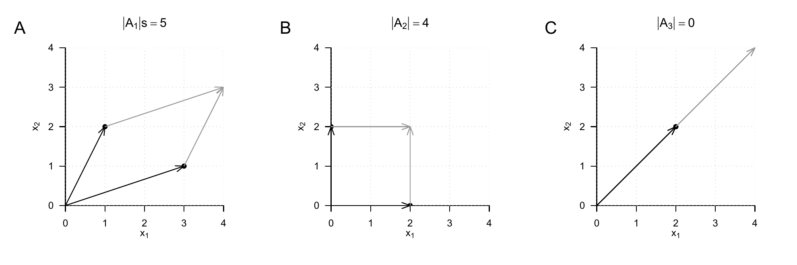
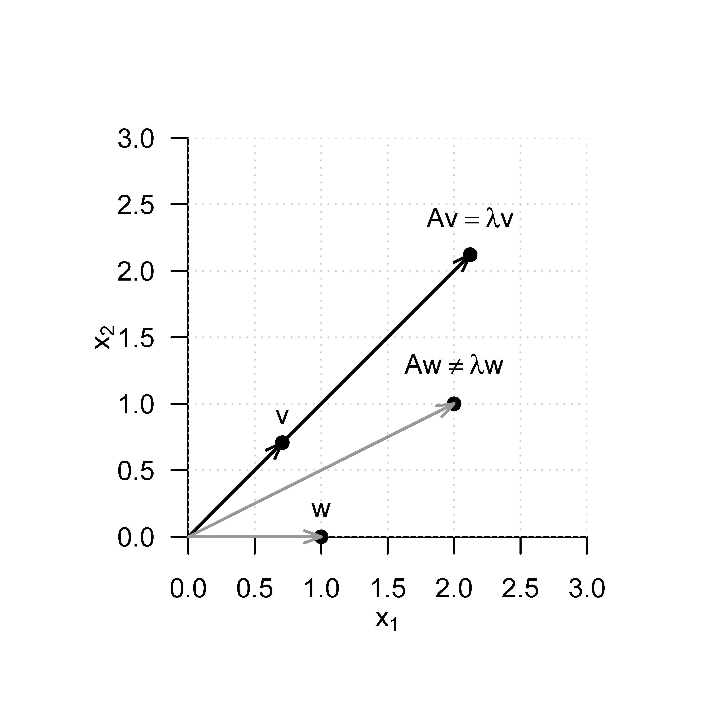

[,1] [,2] [,3]
[1,] 2 3 0
[2,] 1 6 59 Matrices
Matrices are the words of the language of modern data analysis. An understanding of modern data-analytic methods and their implementation is not possible without a basic understanding of the concept of a matrix and knowledge of the fundamental matrix operations. Matrices can play very different roles. For example, matrices can represent data, experimental designs, and model parameters. In the context of linear algebra, matrices are used to represent linear mappings and vector spaces; here vectors are then understood as special matrices.
In this chapter, we introduce working with matrices while largely avoiding abstract terminology from linear algebra. We first introduce the concept of a matrix and then discuss the first fundamental matrix operations, namely matrix addition, matrix subtraction, scalar multiplication, and matrix transposition (Section 9.1 and Section 9.2). We then introduce the central concepts of matrix multiplication and matrix inversion (Section 9.3 and Section 9.4). With the matrix determinant, we discuss a first measure for describing matrices in Section 9.5. We close in Section 9.6 with an overview of particularly common matrices.
9.1 Definition
We begin with the definition of a matrix.
Definition 9.1 A matrix is a rectangular arrangement of numbers denoted as follows: \[\begin{equation} A := \begin{pmatrix} a_{11} & a_{12} & \cdots & a_{1m} \\ a_{21} & a_{22} & \cdots & a_{2m} \\ \vdots & \vdots & \ddots & \vdots \\ a_{n1} & a_{n2} & \cdots & a_{nm} \end{pmatrix} := {(a_{ij})}_{1\le i\le n,\, 1\le j\le m}. \end{equation}\]
Matrices consist of rows and columns. The matrix entries \(a_{ij}\) are indexed with a row index \(i\) and a column index \(j\). For example, for \[\begin{equation} A:=\begin{pmatrix} 2 & 7 & 5 & 2 \\ 8 & 2 & 5 & 6 \\ 6 & 4 & 0 & 9 \\ 9 & 2 & 1 & 2 \end{pmatrix}, \end{equation}\] we have \(a_{32} = 4\). The size or dimension of a matrix is determined by the number of its rows \(n \in \mathbb{N}\) and columns \(m \in \mathbb{N}\). Matrices with \(n = m\) are called square matrices.
In what follows, we only need matrices with real entries, that is, \(a_{ij} \in \mathbb{R}\) for all \(i = 1,...,n\) and \(j = 1,...,m\). We call matrices with real entries real matrices and denote the set of real matrices with \(n\) rows and \(m\) columns by \(\mathbb{R}^{n \times m}\). From the expression \[\begin{equation} A \in \mathbb{R}^{n\times m} \end{equation}\] we can therefore see that \(A\) is a real matrix with \(n\) rows and \(m\) columns. We identify the set \(\mathbb{R}^{1 \times 1}\) with the set \(\mathbb{R}\) and the set \(\mathbb{R}^{n \times 1}\) with the set \(\mathbb{R}^n\). Thus, real matrices with one column and \(n\) rows correspond to \(n\)-dimensional real vectors, and real matrices with one column and one row correspond to real numbers.
Defining matrices in R
In R, matrices are defined by transforming R vectors into the representation of a mathematical matrix with the matrix() function. The entries of an R vector are distributed over the matrix according to their total number and the specified number of rows nrow. For example, if we want to define the matrix \[\begin{equation}
A :=
\begin{pmatrix}
2 & 3 & 0 \\
1 & 6 & 5
\end{pmatrix}
\end{equation}\] in R, we obtain
By default, R follows a so-called column-major order, that is, the elements of the R vector c(2,1,3,6,0,5) are transferred one after another from top to bottom into the columns of the matrix from left to right. A somewhat clearer connection between the visual layout of the R code and the resulting matrix is obtained by formatting the R vector with line breaks according to the intended matrix layout and then changing the column-major order to row-major order with the argument byrow = TRUE. Then the first row of the matrix is filled from left to right with the elements of the R vector, then the second row, and so on until all elements of the vector are distributed over the matrix.
[,1] [,2] [,3]
[1,] 2 3 0
[2,] 1 6 59.2 Basic Matrix Operations
One can compute with matrices. The following matrix operations are fundamental:
- the addition of matrices of the same size, called matrix addition,
- the subtraction of matrices of the same size, called matrix subtraction,
- the multiplication of a matrix by a scalar, called scalar multiplication,
- the interchange of the rows and columns of a matrix, called matrix transposition.
In what follows, we introduce these operations in operator form, that is, as functions. This serves in particular to emphasize, for each operation, by means of its domain what kind of objects the respective operation takes, and by means of its codomain what kind of object the result of the respective operation is.
9.2.1 Matrix Addition
Definition 9.2 Let \(A,B\in \mathbb{R}^{n\times m}\). Then the addition of \(A\) and \(B\) is defined as the mapping \[\begin{equation} + : \mathbb{R}^{n\times m} \times \mathbb{R}^{n\times m} \to \mathbb{R}^{n \times m}, \, (A,B) \mapsto +(A,B) := A + B \end{equation}\] with \[\begin{align} \begin{split} A + B & = \begin{pmatrix} a_{11} & a_{12} & \cdots & a_{1m} \\ a_{21} & a_{22} & \cdots & a_{2m} \\ \vdots & \vdots & \ddots & \vdots \\ a_{n1} & a_{n2} & \cdots & a_{nm} \end{pmatrix} + \begin{pmatrix} b_{11} & b_{12} & \cdots & b_{1m} \\ b_{21} & b_{22} & \cdots & b_{2m} \\ \vdots & \vdots & \ddots & \vdots \\ b_{n1} & b_{n2} & \cdots & b_{nm} \end{pmatrix} \\ & := \begin{pmatrix} a_{11} + b_{11} & a_{12} + b_{12} & \cdots & a_{1m} + b_{1m} \\ a_{21} + b_{21} & a_{22} + b_{22} & \cdots & a_{2m} + b_{2m} \\ \vdots & \vdots & \ddots & \vdots \\ a_{n1} + b_{n1} & a_{n2} + b_{n2} & \cdots & a_{nm} + b_{nm} \end{pmatrix}. \end{split} \end{align}\]
In particular, the definition of matrix addition specifies that only matrices of the same size can be added and that the operation of matrix addition is defined elementwise.
Example
Let \(A,B\in \mathbb{R}^{2\times 3}\) be defined as \[\begin{equation} A:=\begin{pmatrix} 2 & -3 & 0\\ 1 & 6 & 5\\ \end{pmatrix} \mbox{ and } B := \begin{pmatrix} 4 & 1 & 0\\ -4 & 2 & 0\\ \end{pmatrix}. \end{equation}\] Because \(A\) and \(B\) have the same size, we can add them: \[\begin{align} \begin{split} C = A+B & = \begin{pmatrix} 2 & -3 & 0\\ 1 & 6 & 5\\ \end{pmatrix} + \begin{pmatrix} 4 & 1 & 0\\ -4 & 2 & 0\\ \end{pmatrix}\\ & = \begin{pmatrix} 2 + 4 & -3 + 1 & 0 + 0\\ 1 - 4 & 6 + 2 & 5 + 0\\ \end{pmatrix}\\ & = \begin{pmatrix} 6 & -2 & 0\\ -3 & 8 & 5 \\ \end{pmatrix}. \end{split} \end{align}\]
In R, one carries out the above calculation as follows.
9.2.2 Matrix Subtraction
The subtraction of matrices of the same size is defined analogously to addition.
Definition 9.3 (Matrix Subtraction) Let \(A,B\in \mathbb{R}^{n\times m}\). Then the subtraction of \(A\) and \(B\) is defined as the mapping \[\begin{equation} - : \mathbb{R}^{n\times m} \times \mathbb{R}^{n\times m} \to \mathbb{R}^{n\times m}, \, (A,B) \mapsto -(A,B) := A - B \end{equation}\] with \[\begin{align} \begin{split} A - B & = \begin{pmatrix} a_{11} & a_{12} & \cdots & a_{1m} \\ a_{21} & a_{22} & \cdots & a_{2m} \\ \vdots & \vdots & \ddots & \vdots \\ a_{n1} & a_{n2} & \cdots & a_{nm} \end{pmatrix} - \begin{pmatrix} b_{11} & b_{12} & \cdots & b_{1m} \\ b_{21} & b_{22} & \cdots & b_{2m} \\ \vdots & \vdots & \ddots & \vdots \\ b_{n1} & b_{n2} & \cdots & b_{nm} \end{pmatrix} \\ & := \begin{pmatrix} a_{11} - b_{11} & a_{12} - b_{12} & \cdots & a_{1m} - b_{1m} \\ a_{21} - b_{21} & a_{22} - b_{22} & \cdots & a_{2m} - b_{2m} \\ \vdots & \vdots & \ddots & \vdots \\ a_{n1} - b_{n1} & a_{n2} - b_{n2} & \cdots & a_{nm} - b_{nm} \end{pmatrix}. \end{split} \end{align}\]
As with matrix addition, the definition of matrix subtraction specifies that only matrices of the same size can be subtracted from one another and that the subtraction of two equally sized matrices is defined elementwise.
Example
We can also subtract the matrices \(A\) and \(B\) defined in the example on matrix addition from one another: \[\begin{align} \begin{split} D = A-B & = \begin{pmatrix} 2 & -3 & 0\\ 1 & 6 & 5\\ \end{pmatrix} - \begin{pmatrix} 4 & 1 & 0\\ -4 & 2 & 0\\ \end{pmatrix}\\ & = \begin{pmatrix} 2 - 4 & -3 - 1 & 0 - 0\\ 1 + 4 & 6 - 2 & 5 - 0\\ \end{pmatrix}\\ & = \begin{pmatrix} -2 & -4 & 0\\ 5 & 4 & 5 \\ \end{pmatrix}. \end{split} \end{align}\]
In R, one carries out this calculation as follows.
9.2.3 Scalar Multiplication
The scalar multiplication of a matrix denotes the multiplication of a scalar by a matrix.
Definition 9.4 (Scalar Multiplication) Let \(c \in \mathbb{R}\) be a scalar and let \(A \in \mathbb{R}^{n\times m}\). Then the scalar multiplication of \(c\) and \(A\) is defined as the mapping \[\begin{equation} \cdot : \mathbb{R} \times \mathbb{R}^{n\times m} \to \mathbb{R}^{n\times m}, \, (c,A) \mapsto \cdot (c,A) := cA \end{equation}\] with \[\begin{align} \begin{split} cA = c \begin{pmatrix} a_{11} & a_{12} & \cdots & a_{1m} \\ a_{21} & a_{22} & \cdots & a_{2m} \\ \vdots & \vdots & \ddots & \vdots \\ a_{n1} & a_{n2} & \cdots & a_{nm} \end{pmatrix} := \begin{pmatrix} ca_{11} & ca_{12} & \cdots & ca_{1m} \\ ca_{21} & ca_{22} & \cdots & ca_{2m} \\ \vdots & \vdots & \ddots & \vdots \\ ca_{n1} & ca_{n2} & \cdots & ca_{nm} \end{pmatrix}. \end{split} \end{align}\]
With this definition, scalar multiplication is therefore defined elementwise.
Example
Let \(c:=-3\) and let \(A\in \mathbb{R}^{4\times 3}\) be defined as
\[\begin{equation} A := \begin{pmatrix} 3 & 1 & 1\\ 5 & 2 & 5\\ 2 & 7 & 1\\ 3 & 4 & 2 \end{pmatrix}. \end{equation}\] Then \[\begin{align} \begin{split} B := cA = -3\begin{pmatrix} 3 & 1 & 1\\ 5 & 2 & 5\\ 2 & 7 & 1\\ 3 & 4 & 2 \end{pmatrix} = \begin{pmatrix} -3\cdot3 & -3\cdot1 & -3\cdot1\\ -3\cdot5 & -3\cdot2 & -3\cdot5\\ -3\cdot2 & -3\cdot7 & -3\cdot1\\ -3\cdot3 & -3\cdot4 & -3\cdot2 \end{pmatrix} = \begin{pmatrix} -9 & -3 & -3 \\ -15 & -6 & -15 \\ -6 & -21 & -3 \\ -9 & -12 & -6 \end{pmatrix}. \end{split} \end{align}\]
In R, one carries out this scalar multiplication as follows.
[,1] [,2] [,3]
[1,] -9 -3 -3
[2,] -15 -6 -15
[3,] -6 -21 -3
[4,] -9 -12 -6With the help of the definition of matrix addition and scalar multiplication, it is possible to define a vector space whose elements are the real matrices. In particular, this definition also specifies the arithmetic rules for working with matrix addition and scalar multiplication.
Theorem 9.1 (Vector Space of Real-Valued Matrices) The triple \((\mathbb{R}^{n \times m}, +, \cdot)\) with the matrix addition and scalar multiplication defined above is a vector space. In particular, for \(A,B,C\in \mathbb{R}^{n \times m}\) and \(r,s,t\in \mathbb{R}\), the following arithmetic rules therefore hold:
- Commutativity of addition: \(A + B = B + A\).
- Associativity of addition: \((A + B) + C = A + (B + C)\).
- Existence of an identity element for addition: \(\exists\, 0 \in \mathbb{R}^{n \times m}\) with \(A + 0 = 0 + A = A\).
- Existence of inverse elements for addition: \(\forall A\,\exists -A \in \mathbb{R}^{n \times m}\) with \(A + (-A) = 0\).
- Existence of an identity element for scalar multiplication: \(\exists\, 1 \in \mathbb{R}\) with \(1 \cdot A = A\).
- Associativity of scalar multiplication: \(r \cdot (s \cdot A) = (r \cdot s)\cdot A\).
- Distributivity with respect to matrix addition: \(r\cdot (A + B) = r\cdot A + r\cdot B\).
- Distributivity with respect to scalar addition: \((r + s)\cdot A = r\cdot A + s\cdot A\).
We omit a proof, which follows directly, with some notational effort, from the elementwise character of matrix addition and scalar multiplication as well as the arithmetic rules known from working with real numbers. The identity element of addition mentioned in the theorem is called the zero matrix; we will introduce a general notation for it later. The inverse elements of addition are given by \[\begin{equation} -A := (-a_{ij})_{1\le i \le n, 1 \le j \le m} \end{equation}\] and make it possible to view matrix subtraction as a special case of matrix addition.
9.2.4 Matrix Transposition
Another frequently occurring basic matrix operation is the interchange of the row and column arrangement of a matrix, called matrix transposition.
Definition 9.5 (Matrix Transposition) Let \(A \in \mathbb{R}^{n\times m}\). Then the transposition of \(A\) is defined as the mapping \[\begin{equation} \cdot^{T} : \mathbb{R}^{n\times m} \to \mathbb{R}^{m \times n}, \, A \mapsto \cdot^{T}(A) := A^T \end{equation}\] with \[\begin{align} \begin{split} A^T = \begin{pmatrix} a_{11} & a_{12} & \cdots & a_{1m} \\ a_{21} & a_{22} & \cdots & a_{2m} \\ \vdots & \vdots & \ddots & \vdots \\ a_{n1} & a_{n2} & \cdots & a_{nm} \end{pmatrix}^T := \begin{pmatrix} a_{11} & a_{21} & \cdots & a_{n1} \\ a_{12} & a_{22} & \cdots & a_{n2} \\ \vdots & \vdots & \ddots & \vdots \\ a_{1m} & a_{2m} & \cdots & a_{nm} \end{pmatrix}. \end{split} \end{align}\]
Thus, for \(A \in \mathbb{R}^{n \times m}\), we always have \(A^T \in \mathbb{R}^{m \times n}\). Furthermore, the following arithmetic rules of matrix transposition hold, as one can see from examples:
- For \(A \in \mathbb{R}^{1 \times 1}\), \[\begin{equation} A^T = A. \end{equation}\]
- We have \[\begin{equation} \left(A^T\right)^T = A. \end{equation}\]
- We have \[\begin{equation} \left(a_{ii}\right)_{1 \le i \le \mbox{min}(n,m)} = \left(a_{ii}\right)^T_{1 \le i \le \mbox{min}(n,m)}. \end{equation}\]
The latter property of transposition states that the elements on the main diagonal of a matrix remain unchanged under transposition.
Example
Let \(A \in \mathbb{R}^{2 \times 3}\) be defined by \[\begin{equation} A:=\begin{pmatrix} 2 & 3 & 0 \\ 1 & 6 & 5 \\ \end{pmatrix}, \end{equation}\] Then \(A^T \in \mathbb{R}^{3 \times 2}\) and, specifically, \[\begin{equation} A^{T} := \begin{pmatrix} 2 & 1 \\ 3 & 6 \\ 0 & 5 \\ \end{pmatrix}. \end{equation}\] Furthermore, apparently \(\min(m,n) = 2\), and consequently \[\begin{equation} (a_{11}) = \left(a_{11}\right)^T \mbox{ and } (a_{22}) = \left(a_{22}\right)^T. \end{equation}\] In R, one transposes a matrix as follows.
[,1] [,2] [,3]
[1,] 2 3 0
[2,] 1 6 5 [,1] [,2]
[1,] 2 1
[2,] 3 6
[3,] 0 5Finally, in connection with matrix addition, matrix subtraction, and scalar multiplication, the following arithmetic rules hold, as one can see from examples:
- For \(A,B\in \mathbb{R}^{n \times m}\), \[\begin{equation} (A+B)^T = A^T + B^T. \end{equation}\]
- For \(A,B\in \mathbb{R}^{n \times m}\), \[\begin{equation} (A-B)^T = A^T - B^T. \end{equation}\]
- For \(c\in \mathbb{R}\) and \(A \in \mathbb{R}^{n \times m}\), \[\begin{equation} (cA)^T = cA^T. \end{equation}\]
9.3 Matrix Multiplication
Matrix multiplication is the central operation when computing with matrices. It is defined as follows.
Definition 9.6 (Matrix Multiplication) Let \(A\in \mathbb{R}^{n \times m}\) and \(B \in \mathbb{R}^{m \times k}\). Then the matrix multiplication of \(A\) and \(B\) is defined as the mapping \[\begin{equation} \cdot : \mathbb{R}^{n\times m} \times \mathbb{R}^{m\times k} \to \mathbb{R}^{n \times k}, \, (A,B) \mapsto \cdot(A,B) := AB \end{equation}\] with \[\begin{align} \begin{split} AB & = \begin{pmatrix} a_{11} & a_{12} & \cdots & a_{1m} \\ a_{21} & a_{22} & \cdots & a_{2m} \\ \vdots & \vdots & \ddots & \vdots \\ a_{n1} & a_{n2} & \cdots & a_{nm} \end{pmatrix} \begin{pmatrix} b_{11} & b_{12} & \cdots & b_{1k} \\ b_{21} & b_{22} & \cdots & b_{2k} \\ \vdots & \vdots & \ddots & \vdots \\ b_{m1} & b_{m2} & \cdots & b_{mk} \end{pmatrix} \\ & := \begin{pmatrix} \sum_{i=1}^m a_{1i}b_{i1} & \sum_{i=1}^m a_{1i}b_{i2} & \cdots & \sum_{i=1}^m a_{1i}b_{ik} \\ \sum_{i=1}^m a_{2i}b_{i1} & \sum_{i=1}^m a_{2i}b_{i2} & \cdots & \sum_{i=1}^m a_{2i}b_{ik} \\ \vdots & \vdots & \ddots & \vdots \\ \sum_{i=1}^m a_{ni}b_{i1} & \sum_{i=1}^m a_{ni}b_{i2} & \cdots & \sum_{i=1}^m a_{ni}b_{ik} \end{pmatrix} \\ & = \left(\sum_{i=1}^m a_{ji}b_{il} \right)_{1 \le j \le n, 1 \le l \le k} \end{split} \end{align}\]
The matrix product \(AB\) is therefore defined only if \(A\) has exactly as many columns as \(B\) has rows. Informally, the following mnemonic applies to the involved matrix sizes: \[\begin{equation} (n \times m)(m \times k) = (n \times k). \end{equation}\] The entry \((AB)_{ij}\) in \(AB\) corresponds to the sum of the multiplied \(i\)th row of \(A\) and \(j\)th column of \(B\). To compute \((AB)_{ij}\) for \(i = 1,...,n\) and \(j = 1,...,k\), one can therefore proceed mentally as follows:
- Place the transpose of the \(i\)th row of \(A\) over the \(j\)th column of \(B\).
- Because \(A\) has exactly \(m\) columns and \(B\) has exactly \(m\) rows, each element of the row from \(A\) has a corresponding element in the column of \(B\).
- Multiply the corresponding elements with one another.
- The sum of these products is then the entry with index \(ij\) in \(AB\).
Example
Let \(A\in \mathbb{R}^{2\times 3}\) and \(B\in \mathbb{R}^{3\times 2}\) be defined as \[\begin{equation} A := \begin{pmatrix} 2 & -3 & 0 \\ 1 & 6 & 5 \end{pmatrix} \mbox{ and } B := \begin{pmatrix} 4 & 2 \\ -1 & 0 \\ 1 & 3 \end{pmatrix}. \end{equation}\] We want to compute \(C := AB\) and \(D := BA\). With \(n = 2, m = 3\), and \(k = 2\), we already know that \(C \in \mathbb{R}^{2 \times 2}\) and \(D \in \mathbb{R}^{3 \times 3}\), because \[\begin{equation} (2 \times 3)(3 \times 2) = (2 \times 2) \end{equation}\] and \[\begin{equation} (3 \times 2)(2 \times 3) = (3 \times 3). \end{equation}\] Thus here surely \(AB \neq BA\). For \(C\), we obtain \[\begin{align} \begin{split} C & = AB \\ & = \begin{pmatrix} 2 & -3 & 0 \\ 1 & 6 & 5 \\ \end{pmatrix} \begin{pmatrix} 4 & 2 \\ -1 & 0 \\ 1 & 3 \end{pmatrix} \\ & = \begin{pmatrix} 2\cdot 4 + (-3)\cdot (-1) + 0\cdot 1 & 2\cdot 2 + (-3)\cdot 0 + 0\cdot 3 \\ 1\cdot 4 + 6\cdot (-1) + 5\cdot 1 & 1\cdot 2 + 6\cdot 0 + 5\cdot 3 \\ \end{pmatrix} \\ & = \begin{pmatrix} 8 + 3 + 0 & 4 + 0 + 0 \\ 4 - 6 + 5 & 2 + 0 + 15 \\ \end{pmatrix} \\ & = \begin{pmatrix} 11 & 4 \\ 3 & 17 \\ \end{pmatrix}. \end{split} \end{align}\]
In R, the %*% operator is used for matrix multiplication.
[,1] [,2]
[1,] 11 4
[2,] 3 17For \(D\), we further obtain \[\begin{align} \begin{split} D & = BA \\ & = \begin{pmatrix} 4 & 2 \\ -1 & 0 \\ 1 & 3 \end{pmatrix} \begin{pmatrix} 2 & -3 & 0 \\ 1 & 6 & 5 \\ \end{pmatrix} \\ & = \begin{pmatrix} 4 \cdot 2 + 2 \cdot 1 & 4 \cdot (-3) + 2 \cdot 6 & 4 \cdot 0 + 2 \cdot 5 \\ (-1) \cdot 2 + 0 \cdot 1 & (-1) \cdot(-3) + 0 \cdot 6 & (-1) \cdot 0 + 0 \cdot 5 \\ 1 \cdot 2 + 3 \cdot 1 & 1 \cdot(-3) + 3 \cdot 6 & 1 \cdot 0 + 3 \cdot 5 \end{pmatrix} \\ & = \begin{pmatrix} 8 + 2 & -12 + 12 & 0 + 5 \\ -2 + 0 & 3 + 0 & 0 + 0 \\ 2 + 3 & -3 + 18 & 0 + 15 \end{pmatrix} \\ & = \begin{pmatrix} 10 & 0 & 10 \\ -2 & 3 & 0 \\ 5 & 15 & 15 \\ \end{pmatrix} \end{split} \end{align}\]
In R, one checks this calculation as follows.
[,1] [,2] [,3]
[1,] 10 0 10
[2,] -2 3 0
[3,] 5 15 15However, if a matrix multiplication is not defined because of incompatible matrix sizes, then it also cannot be evaluated numerically.
Error in `t(A) %*% B`:
! nicht passende ArgumenteThe following theorem, which we do not prove, establishes the relation between the inner product of two vectors and the multiplication of two matrices. This essentially follows from the identification of \(\mathbb{R}^{n}\) and \(\mathbb{R}^{n \times 1}\) and from the fact that, by definition, the entry \((AB)_{ij}\) in the product of \(A \in \mathbb{R}^{n \times m}\) and \(B \in \mathbb{R}^{m \times k}\) corresponds to the vector inner product of the \(i\)th column of \(A^T\) and the \(j\)th column of \(B\).
Theorem 9.2 (Matrix Multiplication and Vector Inner Product) Let \(x,y \in \mathbb{R}^n\). Then \[\begin{equation} \langle x,y \rangle = x^Ty. \end{equation}\] Furthermore, for \(A \in \mathbb{R}^{n\times m}\) and \(i = 1,...,n\), let \[\begin{equation} \bar{a}_i := (a_{ij})_{1 \le j \le m} \in \mathbb{R}^m \end{equation}\] be the columns of \(A^T\), and for \(B \in \mathbb{R}^{m \times k}\) and \(j = 1,...,k\), let \[\begin{equation} \bar{b}_j := (b_{ij})_{1 \le i \le m} \in \mathbb{R}^m \end{equation}\] be the columns of \(B\), that is, \[\begin{equation} A^T = \begin{pmatrix} \bar{a}_1 & \bar{a}_2 & \cdots & \bar{a}_n \end{pmatrix} \in \mathbb{R}^{m \times n} \mbox{ and } B = \begin{pmatrix} \bar{b}_1 & \bar{b}_2 & \cdots & \bar{b}_k \end{pmatrix} \in \mathbb{R}^{m \times k}. \end{equation}\] Then \[\begin{equation} AB = \left(\langle \bar{a}_i,\bar{b}_j \rangle \right)_{1 \le i \le n, 1 \le j \le k}. \end{equation}\]
9.3.1 Arithmetic Rules for Matrix Multiplication
In the following, we collect a few basic arithmetic rules for matrix multiplication, especially also in combination with other matrix operations.
For proofs of the following two theorems on associativity and distributivity, which essentially follow from the corresponding arithmetic rules for sums and products of real numbers, we refer to the advanced literature.
Theorem 9.3 (Associativity) Let \(A \in \mathbb{R}^{n \times m}\), \(B \in \mathbb{R}^{m \times k}\), \(C \in \mathbb{R}^{k \times p}\), and \(c \in \mathbb{R}\). Then:
- Matrix multiplication is associative, that is, \[\begin{equation} A(BC) = (AB)C. \end{equation}\]
- The combination of matrix multiplication and scalar multiplication is associative, \[\begin{equation} c(AB) = (cA)B = A(cB). \end{equation}\]
The associativity of matrix multiplication and scalar multiplication can be seen easily by considering the \(j,l\)th element of \(c(AB)\), \((cA)B\), and \(A(cB)\): \[\begin{equation} c\left(\sum_{i = 1}^m a_{ji}b_{il}\right) = \sum_{i = 1}^m \left(c a_{ji}\right) b_{il} = \sum_{i = 1}^m a_{ji}\left(c b_{il}\right). \end{equation}\]
Theorem 9.4 (Distributivity) Let \(A \in \mathbb{R}^{n \times m}\), \(B \in \mathbb{R}^{n \times m}\), and \(C \in \mathbb{R}^{m \times p}\). Then \[\begin{equation} (A + B)C = AC + BC \end{equation}\] and \[\begin{equation} C^T(A + B) = C^TA + C^TB \end{equation}\]
In contrast to the commutativity of multiplication of real numbers, matrix multiplication is in general not commutative.
Theorem 9.5 (Noncommutativity) Let \(A \in \mathbb{R}^{n \times m}\) and \(B \in \mathbb{R}^{m \times p}\). In general, \[\begin{equation} AB \neq BA. \end{equation}\]
Proof. If \(p \neq n\), then \(BA\) is not defined, so we consider only the case \(p = n\). We show by giving a counterexample with \(A,B\in \mathbb{R}^{2 \times 2}\) that in general \(AB = BA\) does not hold. Let \[\begin{equation} A := \begin{pmatrix} 0 & 1 \\ 0 & 0 \end{pmatrix} \mbox{ and } B := \begin{pmatrix} 0 & 0 \\ 1 & 0 \end{pmatrix}. \end{equation}\] Then \[\begin{equation} AB = \begin{pmatrix} 0 & 1 \\ 0 & 0 \end{pmatrix} \begin{pmatrix} 0 & 0 \\ 1 & 0 \end{pmatrix} = \begin{pmatrix} 1 & 0 \\ 0 & 0 \end{pmatrix} \neq \begin{pmatrix} 0 & 0 \\ 0 & 1 \end{pmatrix} = \begin{pmatrix} 0 & 0 \\ 1 & 0 \end{pmatrix} \begin{pmatrix} 0 & 1 \\ 0 & 0 \end{pmatrix} = BA. \end{equation}\]
Theorem 9.6 (Combination of Matrix Multiplication and Transposition) Let \(A \in \mathbb{R}^{m \times n}\) and \(B \in \mathbb{R}^{n \times k}\). Then \[\begin{equation} (AB)^T = B^TA^T. \end{equation}\]
Proof. A proof is obtained as follows: \[\begin{align} \begin{split} (AB)^T & = \left(\left(\sum_{i=1}^n a_{ji}b_{il} \right)_{1 \le j \le m, 1 \le l \le k}\right)^T \\ & = \left(\sum_{i=1}^n a_{li}b_{ij} \right)_{1 \le j \le k, 1 \le l \le m} \\ & = \left(\sum_{i=1}^n b_{ij}a_{li} \right)_{1 \le j \le k, 1 \le l \le m} \\ & = B^TA^T. \end{split} \end{align}\]
9.4 Matrix Inversion
To motivate the concept of the inverse matrix, we first consider the problem of solving a system of linear equations. To this end, let \(A\in \mathbb{R}^{n \times n},\, x \in \mathbb{R}^n\), and \(b \in \mathbb{R}^n\), and suppose that \[\begin{equation} Ax = b. \end{equation}\] Let \(A\) and \(b\) be known, and let \(x\) be unknown. Specifically, for example, let \[\begin{equation} A := \begin{pmatrix} 1 & 2 \\ 3 & 4 \end{pmatrix} \mbox{ and } b := \begin{pmatrix} 5 \\ 11 \end{pmatrix}. \end{equation}\]
Then the following system of linear equations with two equations and two unknowns is given: \[\begin{equation} Ax = b \Leftrightarrow \begin{pmatrix} 1 & 2 \\ 3 & 4 \end{pmatrix} \begin{pmatrix} x_1 \\ x_2 \end{pmatrix} = \begin{pmatrix} 5 \\ 11 \end{pmatrix} \Leftrightarrow \begin{matrix} 1x_1 + 2x_2 & = 5 \\ 3x_1 + 4x_2 & = 11 \end{matrix}. \end{equation}\]
The goal of solving systems of linear equations is, as is well known, to find those \(x\) for which the system is satisfied. To introduce the concept of the inverse matrix of \(A\) in this context, we simplify the situation further. We assume that \(A = a\) is a \(1 \times 1\) matrix, that is, a scalar, and likewise that \(x\) and \(b\) are scalars, so that for \(a,x,b \in \mathbb{R}\) we have the equation \[\begin{equation} ax = b \end{equation}\] To solve this equation for \(x\), one would naturally multiply both sides of the equation by the multiplicative inverse of \(a\), where the multiplicative inverse of \(a\) denotes the value which, when multiplied by \(a\), yields \(1\). As is well known, this is given by \[\begin{equation} a^{-1} = \frac{1}{a} \end{equation}\] Then \[\begin{equation} ax = b \Leftrightarrow a^{-1}ax = a^{-1}b \Leftrightarrow 1 \cdot x = a^{-1}b \Leftrightarrow x = \frac{b}{a}. \end{equation}\] For example, quite concretely, \[\begin{equation} 2x = 6 \Leftrightarrow 2^{-1} 2x = 2^{-1}6 \Leftrightarrow \frac{1}{2}2x = \frac{1}{2}6 \Leftrightarrow x = 3. \end{equation}\] Analogously to the case in which all matrices in \(Ax = b\) are scalars, in the case of a system of linear equations one would like to be able to multiply both sides of the equation by the multiplicative inverse \(A^{-1}\) of \(A\), so that an equation of the form \[\begin{equation} A^{-1}A = "1". \end{equation}\] results. Then one would have \[\begin{equation} Ax = b \Leftrightarrow A^{-1}Ax = A^{-1}b \Leftrightarrow x = A^{-1}b. \end{equation}\] This intuitive idea of the multiplicative inverse of a matrix \(A\) is formalized below under the concept of the inverse matrix. To this end, we first need the concept of the identity matrix.
Definition 9.7 (Identity Matrix) The matrix \[\begin{equation} I_n := (a_{ij})_{1\le i \le n, 1 \le j \le n} \in \mathbb{R}^{n \times n} := \begin{pmatrix} 1 & 0 & \cdots & 0 \\ 0 & 1 & \cdots & 0 \\ \vdots & \vdots & \ddots & \vdots \\ 0 & 0 & \cdots & 1 \\ \end{pmatrix} \end{equation}\] with \(a_{ij} = 1\) for \(i = j\) and \(a_{ij} = 0\) for \(i \neq j\) is called the \(n\)-dimensional identity matrix.
In R, \(I_n\) is generated with the command diag(n). For matrix multiplication, the identity matrix is the analogue of the 1 in the multiplication of real numbers. This is the statement of the following theorem.
Theorem 9.7 (Identity Element of Matrix Multiplication) \(I_n\) is the identity element of matrix multiplication, that is, for \(A \in \mathbb{R}^{n \times m}\) we have \[\begin{equation} I_nA = A \mbox{ and } AI_m = A. \end{equation}\]
Proof. Let \(B = (b_{ij}) = I_nA \in \mathbb{R}^{n\times m}\). Then, for all \(1 \le i \le n\) and all \(1 \le j \le m\), \[\begin{equation} b_{ij} = 0 \cdot a_{1j} + 0 \cdot a_{2j} + \cdots + 0 \cdot a_{i-1,j} + 1 \cdot a_{ij} + \cdots + 0 \cdot a_{i+1,j} + 0 \cdot a_{nj} = a_{ij}. \end{equation}\] The proof for \(AI_m\) is analogous.
With the concept of the identity matrix, we can now define the concepts of the inverse matrix and the invertible matrix:
Definition 9.8 (Invertible Matrix and Inverse Matrix) A square matrix \(A \in \mathbb{R}^{n \times n}\) is called invertible if there exists a square matrix \(A^{-1} \in \mathbb{R}^{n \times n}\) such that \[\begin{equation} A^{-1}A = AA^{-1} = I_n \end{equation}\] The matrix \(A^{-1}\) is called the inverse matrix of \(A\).
Note that the concepts of the inverse matrix and invertibility refer only to square matrices. In particular, square matrices can be invertible, but need not be (systems of linear equations can therefore have solutions, but need not). Non-invertible matrices are also called singular matrices, and invertible matrices are sometimes called nonsingular matrices. Finally, note that Definition 9.8 merely states what an inverse matrix is, but not how to compute it.
Example of an invertible matrix
The matrix \[\begin{equation} A := \begin{pmatrix} 2.0 & 1.0 \\ 3.0 & 4.0 \end{pmatrix} \end{equation}\] is invertible, and its inverse matrix is given by \[\begin{equation} A^{-1} = \begin{pmatrix} 0.8 & -0.2 \\ -0.6 & 0.4 \end{pmatrix}, \end{equation}\] because \[\begin{equation} \begin{pmatrix} 2.0 & 1.0 \\ 3.0 & 4.0 \end{pmatrix} \begin{pmatrix} 0.8 & -0.2 \\ -0.6 & 0.4 \end{pmatrix} = \begin{pmatrix} 1 & 0 \\ 0 & 1 \end{pmatrix} = \begin{pmatrix} 0.8 & -0.2 \\ -0.6 & 0.4 \end{pmatrix} \begin{pmatrix} 2.0 & 1.0 \\ 3.0 & 4.0 \end{pmatrix}, \end{equation}\] as can be verified by direct calculation.
Example of a non-invertible matrix
The matrix \[\begin{equation} B := \begin{pmatrix} 1 & 0 \\ 0 & 0 \end{pmatrix} \end{equation}\] is not invertible, because if \(B\) were invertible, then there would exist \[\begin{equation} \begin{pmatrix} a & b \\ c & d \end{pmatrix} \end{equation}\] with \[\begin{equation} \begin{pmatrix} 1 & 0 \\ 0 & 0 \end{pmatrix} \begin{pmatrix} a & b \\ c & d \end{pmatrix} = \begin{pmatrix} a & b \\ 0 & 0 \end{pmatrix} = \begin{pmatrix} 1 & 0 \\ 0 & 1 \end{pmatrix}. \end{equation}\] But this would mean that \(0 = 1\) in \(\mathbb{R}\), which is a contradiction. Therefore, \(B\) cannot be invertible.
On computing inverse matrices
\(2 \times 2\) up to about \(5 \times 5\) matrices can in principle be inverted by hand; linear algebra provides various methods for this. We omit an introduction to matrix inversion by hand here, since matrices are inverted numerically by default in applications. Numerical matrix inversion is also a large field of research in numerical mathematics, which provides a variety of algorithms for this purpose. In R, matrices are inverted by default with the function solve(), in analogy to solving systems of linear equations. For the above example of an invertible matrix, this yields the following R code.
[,1] [,2]
[1,] 0.8 -0.2
[2,] -0.6 0.4 [,1] [,2]
[1,] 1 0
[2,] 0 1 [,1] [,2]
[1,] 1 -5.551115e-17
[2,] 0 1.000000e+00Non-invertible matrices are, of course, also numerically non-invertible, as the following error message in R demonstrates for the above example of a non-invertible matrix.
9.5 Determinants
The determinant is a versatile measure of a square matrix. For understanding eigenanalysis and matrix decomposition, the concept of the determinant is fundamental in the context of the characteristic polynomial.
In general, a determinant is a nonlinear mapping of the form \[\begin{equation} \lvert \cdot \rvert: \mathbb{R}^{n \times n} \to \mathbb{R}, A \mapsto \lvert A \rvert, \end{equation}\] that is, a determinant assigns the real number \(\lvert A \rvert\) to a square matrix \(A\). The number \(\lvert A \rvert\) is determined recursively by the following definition.
Definition 9.9 (Determinant) For \(A = (a_{ij})_{1 \le i,j \le n} \in \mathbb{R}^{n \times n}\) with \(n>1\), let \(A_{ij} \in \mathbb{R}^{n-1 \times n-1}\) be the matrix obtained from \(A\) by removing the \(i\)th row and the \(j\)th column. Then the number \[\begin{align} \lvert A \rvert & := a_{11} \quad\quad\quad\quad\quad\quad\quad\quad\quad\quad\quad\quad \mbox{ for } n = 1\\ \lvert A \rvert & := \sum_{j = 1}^n a_{1j}(-1)^{1+j} \det\left(A_{1j}\right) \mbox{ for } n > 1 \end{align}\] is called the determinant of \(A\).
The definition thus successively reduces the determination of the determinant of a square matrix, by deleting rows and columns, to the determinant of a \(1 \times 1\) matrix, which is given by its only element. For \[\begin{equation} A := \begin{pmatrix} 1 & 2 & 3 \\ 4 & 5 & 6 \\ 7 & 8 & 9 \\ \end{pmatrix} \in \mathbb{R}^{3 \times 3} \end{equation}\] we obtain, for example, the following matrices of the form \(A_{ij} \in \mathbb{R}^{3-1 \times 3-1}\): \[\begin{equation} A_{11} = \begin{pmatrix} 5 & 6 \\ 8 & 9 \\ \end{pmatrix}, A_{12} = \begin{pmatrix} 4 & 6 \\ 7 & 9 \\ \end{pmatrix}, A_{21} = \begin{pmatrix} 2 & 3 \\ 8 & 9 \\ \end{pmatrix}, A_{22} = \begin{pmatrix} 1 & 3 \\ 7 & 9 \\ \end{pmatrix}. \end{equation}\]
For computing determinants of two- and three-dimensional square matrices, there are direct, non-recursive arithmetic rules, which are recorded in the following theorem.
Theorem 9.8 (Determinants of Two- and Three-Dimensional Matrices) \(\quad\)
Let \(A = (a_{ij})_{1 \le i,j \le 2} \in \mathbb{R}^{2 \times 2}\). Then \[\begin{equation} \lvert A \rvert = a_{11}a_{22} - a_{12}a_{21}. \end{equation}\] Let \(A = (a_{ij})_{1 \le i,j \le 3} \in \mathbb{R}^{3 \times 3}\). Then \[\begin{equation} \lvert A \rvert= a_{11}a_{22}a_{33} + a_{12}a_{23}a_{31} + a_{13}a_{21}a_{32} - a_{12}a_{21}a_{33} - a_{11}a_{23}a_{32} - a_{13}a_{22}a_{31}. \end{equation}\]
Proof. For \(A \in \mathbb{R}^{2 \times 2}\), by definition \[\begin{align} \begin{split} \lvert A \rvert & = \sum_{j = 1}^n a_{1j}(-1)^{1+j} |A_{1j}| \\ & = a_{11}(-1)^{1 + 1}|A_{11}| + a_{12}(-1)^{1 + 2}|A_{12}| \\ & = a_{11}|(a_{22})| - a_{12}|(a_{21})| \\ & = a_{11}a_{22} - a_{12}a_{21}. \\ \end{split} \end{align}\] For \(A \in \mathbb{R}^{3 \times 3}\), by definition and with the formula for determinants of \(2 \times 2\) matrices, \[\begin{align} \begin{split} \lvert A \rvert & = \sum_{j = 1}^n a_{1j}(-1)^{1+j} |A_{1j}| \\ & = a_{11}(-1)^{1+1} |A_{11}| + a_{12}(-1)^{1+2} |A_{12}| + a_{13}(-1)^{1+3}|A_{13}| \\ & = a_{11}|A_{11}| - a_{12}|A_{12}| + a_{13}|A_{13}| \\ & = a_{11}\left\vert\begin{pmatrix} a_{22} & a_{23} \\ a_{32} & a_{33}\end{pmatrix}\right\vert - a_{12}\left\vert\begin{pmatrix} a_{21} & a_{23} \\ a_{31} & a_{33}\end{pmatrix}\right\vert + a_{13}\left\vert\begin{pmatrix} a_{21} & a_{22} \\ a_{31} & a_{32}\end{pmatrix}\right\vert \\ & = a_{11}(a_{22}a_{33} - a_{23}a_{32}) - a_{12}(a_{21}a_{33} - a_{23}a_{31}) + a_{13}(a_{21}a_{32} - a_{22}a_{31}) \\ & = a_{11}a_{22}a_{33} - a_{11}a_{23}a_{32} - a_{12}a_{21}a_{33} + a_{12}a_{23}a_{31} + a_{13}a_{21}a_{32} - a_{13}a_{22}a_{31} \\ & = a_{11}a_{22}a_{33} + a_{12}a_{23}a_{31} + a_{13}a_{21}a_{32} - a_{12}a_{21}a_{33} - a_{11}a_{23}a_{32} - a_{13}a_{22}a_{31}. \end{split} \end{align}\]
For determining the determinants of \(2 \times 2\) and \(3 \times 3\) matrices, the so-called rule of Sarrus therefore applies: \[\begin{equation*} \mbox{``sum of the products on the diagonals minus sum of the products on the counterdiagonals.''} \end{equation*}\] For \(3 \times 3\) matrices, the mnemonic refers to the scheme \[\begin{equation} \begin{pmatrix} a_{11} & a_{12} & a_{13} & \vert & a_{11} & a_{12} \\ a_{21} & a_{22} & a_{23} & \vert & a_{21} & a_{22} \\ a_{31} & a_{32} & a_{33} & \vert & a_{31} & a_{32} \end{pmatrix}. \end{equation}\]
Examples for determinants of \(2 \times 2\) and \(3 \times 3\) matrices
Let \[\begin{equation} A := \begin{pmatrix} 2 & 1 \\ 3 & 4 \end{pmatrix}, B := \begin{pmatrix} 1 & 0 \\ 0 & 0 \end{pmatrix} \mbox{ and } C := \begin{pmatrix} 2 & 0 & 0 \\ 0 & 1 & 0 \\ 0 & 0 & 3 \end{pmatrix} \end{equation}\] Then \[\begin{equation} \lvert A \rvert = 2 \cdot 4 - 1 \cdot 3 = 8 - 3 = 5 \end{equation}\] and \[\begin{equation} \lvert B \rvert = 1 \cdot 0 - 0 \cdot 0 = 0 - 0 = 0 \end{equation}\] and \[\begin{equation} \lvert C \rvert = 2 \cdot 1 \cdot 3 + 0 \cdot 0 \cdot 0 + 0 \cdot 0 \cdot 0 - 0 \cdot 0 \cdot 3 - 0 \cdot 0 \cdot 0 - 0 \cdot 1 \cdot 0 = 2 \cdot 1 \cdot 3 = 6. \end{equation}\]
In R, one checks this with the det() function as follows.
[1] 5[1] 0[1] 6There are numerous arithmetic rules for determinants in conjunction with matrix multiplication and matrix inversion. Without proof, we collect these in the following theorem.
Theorem 9.9 (Arithmetic Rules for Determinants) \(\quad\)
(Multiplication theorem for determinants.) For \(A,B \in \mathbb{R}^{n \times n}\), \[\begin{equation} |AB| = \lvert A \rvert\lvert B \rvert. \end{equation}\] (Transposition.) For \(A \in \mathbb{R}^{n \times n}\), \[\begin{equation} \lvert A \rvert = \left\vert A^T \right\vert. \end{equation}\] (Inversion.) For an invertible matrix \(A \in \mathbb{R}^{n \times n}\), \[\begin{equation} \left\vert A^{-1}\right\vert = \frac{1}{\lvert A \rvert}. \end{equation}\] (Triangular matrices.) For matrices \(A = (a_{ij})_{1 \le i,j\le n} \in \mathbb{R}^{n \times n}\) with \(a_{ij} = 0\) for \(i > j\) or \(a_{ij} = 0\) for \(j > i\), \[\begin{equation} \lvert A \rvert = \prod_{i=1}^n a_{ii}. \end{equation}\]
The following very deep theorem, which we do not want to prove completely, provides a way to determine from the determinant of a square matrix whether it is invertible.
Theorem 9.10 \(A \in \mathbb{R}^{n \times n}\) is invertible if and only if \(\lvert A \rvert \neq 0\). Thus, \[\begin{equation} A \mbox{ is invertible} \Leftrightarrow \lvert A \rvert \neq 0 \mbox{ and } A \mbox{ is not invertible} \Leftrightarrow \lvert A \rvert = 0. \end{equation}\]
Proof. We only indicate a proof and show that invertibility of \(A\) implies that \(\lvert A \rvert\) cannot be zero. Suppose, then, that \(A\) is invertible. Then there exists a matrix \(B\) with \(AB = I_n\), and by the multiplication theorem for determinants it follows that \[\begin{equation} \lvert AB \rvert = \lvert A \rvert\lvert B \rvert= |I_n| = 1. \end{equation}\] Thus, \(\lvert A \rvert = 0\) cannot hold, because otherwise \(0 = 1\).
Visual Intuition
The abstract concept of the determinant of a square matrix can be illustrated somewhat with the concept of a vector space. To this end, let \(a_1,...,a_n \in \mathbb{R}^n\) be the columns of \(A \in \mathbb{R}^{n \times n}\). Then (as we do not prove) \(\lvert A \rvert\) corresponds to the signed volume of the parallelotope spanned by \(a_1,...,a_n\in \mathbb{R}^n\). To illustrate this visually, we consider the matrices \[\begin{equation} A_1 = \begin{pmatrix} 3 & 1 \\ 1 & 2 \end{pmatrix}, A_2 = \begin{pmatrix} 2 & 0 \\ 0 & 2 \end{pmatrix}, A_3 = \begin{pmatrix} 2 & 2 \\ 2 & 2 \end{pmatrix} \end{equation}\] with the respective determinants \[\begin{equation} \lvert A_1 \rvert = 3\cdot 2 - 1 \cdot 1 = 5, \quad \lvert A_2 \rvert= 2\cdot 2 - 0 \cdot 0 = 4, \quad \lvert A_3 \rvert = 2\cdot 2 - 2 \cdot 2 = 0. \end{equation}\]
Figure 9.1 visualizes the corresponding intuition.

9.6 Special Matrices
In this section, we collect several frequently occurring types of matrices and their properties. For proofs of the vast majority of properties, we refer to the advanced literature.
9.6.1 Identity Matrices
We have already encountered the identity matrix and the unit vectors. We collect them here once more in a joint definition.
Definition 9.10 (Identity Matrix and Unit Vectors) We denote the identity matrix by \[\begin{equation} I_{n} := (i_{jk})_{1 \le j \le n, 1 \le k \le n} \in \mathbb{R}^{n \times n} \mbox{ with } i_{jk} = 1 \mbox{ for } j = k \mbox{ and } i_{jk} = 0 \mbox{ for } j \neq k. \end{equation}\] We denote the unit vectors \(e_i, i = 1,...,n\) by \[\begin{equation} e_{i} := (e_{{i}_j})_{1 \le j \le n} \in \mathbb{R}^{n} \mbox{ with } e_{{i}_j} = 1 \mbox{ for } i = j \mbox{ and } e_{{i}_j} = 0 \mbox{ for } i \neq j. \end{equation}\]
The identity matrix \(I_n\) consists only of zeros and diagonal elements equal to one; the unit vectors consist only of zeros and one single 1 in the respectively indexed component. We have \[\begin{equation} I_n = \begin{pmatrix} e_1 & \cdots & e_n \end{pmatrix} \in \mathbb{R}^{n \times n} \end{equation}\] For \(n = 3\), for example, \[\begin{equation} I_3 = \begin{pmatrix} 1 & 0 & 0 \\ 0 & 1 & 0 \\ 0 & 0 & 1 \end{pmatrix} \mbox{ and } e_1 = \begin{pmatrix} 1 \\ 0 \\ 0 \end{pmatrix}, e_2 = \begin{pmatrix} 0 \\ 1 \\ 0 \end{pmatrix}, e_3 = \begin{pmatrix} 0 \\ 0 \\ 1 \end{pmatrix}. \end{equation}\] Furthermore, as is well known, for the unit vectors and \(1 \le i,j \le n\), \[\begin{equation} e^T_ie_j = 0 \mbox{ for } i \neq j, e^T_ie_i = 1 \mbox{ and } e^T_iv = v^Te_i = v_i \mbox{ for } v \in \mathbb{R}^n. \end{equation}\]
9.6.2 One Matrices and Zero Matrices
Definition 9.11 (Zero Matrices, Zero Vectors, One Matrices, One Vectors) We denote zero matrices and zero vectors by \[\begin{equation} 0_{nm} := (0)_{1 \le i \le n, 1 \le j \le m} \in \mathbb{R}^{n \times m} \mbox{ and } 0_{n} := (0)_{1 \le i \le n} \in \mathbb{R}^{n}. \end{equation}\] We denote one matrices and one vectors by \[\begin{equation} 1_{nm} := (1)_{1 \le i \le n, 1 \le j \le m} \in \mathbb{R}^{n \times m} \mbox{ and } 1_n := (1)_{1 \le i \le n} \in \mathbb{R}^n. \end{equation}\]
\(0_{nm}\) and \(0_{n}\) therefore consist only of zeros, and \(1_{nm}\) and \(1_{n}\) consist only of ones. For example, \[\begin{equation} 0_{32} = \begin{pmatrix} 0 & 0 \\ 0 & 0 \\ 0 & 0 \end{pmatrix}, 0_{3} = \begin{pmatrix} 0 \\ 0 \\ 0 \end{pmatrix}, 1_{32} = \begin{pmatrix} 1 & 1 \\ 1 & 1 \\ 1 & 1 \end{pmatrix} \mbox{ and } 1_{3} = \begin{pmatrix} 1 \\ 1 \\ 1 \end{pmatrix}. \end{equation}\] Furthermore, for example, \[\begin{equation} 0_n0_n^T = 0_{nn} \mbox{ and } 1_n1_n^T = 1_{nn}, \end{equation}\] as can be verified by direct calculation.
9.6.3 Diagonal Matrices
Definition 9.12 (Diagonal Matrix) A matrix \(D \in \mathbb{R}^{n \times m}\) is called a diagonal matrix if \(d_{ij} = 0\) for \(1 \le i \le n, 1 \le j \le m\) with \(i \neq j\).
A square diagonal matrix \(D\in \mathbb{R}^{n \times n}\) with diagonal elements \(d_1,...,d_n \in \mathbb{R}\) is also written as \[\begin{equation} D = \mbox{diag}(d_1,...,d_n). \end{equation}\] For example, \[\begin{equation} D := \mbox{diag}(1,2,3) = \begin{pmatrix} 1 & 0 & 0 \\ 0 & 2 & 0 \\ 0 & 0 & 3 \end{pmatrix} \end{equation}\] and for \(\sigma^2 \in \mathbb{R}\), \[\begin{equation} \Sigma = \mbox{diag}(\sigma^2,\sigma^2,\sigma^2) = \begin{pmatrix} \sigma^2 & 0 & 0 \\ 0 & \sigma^2 & 0 \\ 0 & 0 & \sigma^2 \end{pmatrix} = \sigma^2I_3. \end{equation}\]
In the following theorem, we collect a few important properties of square diagonal matrices.
Theorem 9.11 (Properties of Square Diagonal Matrices) \(\quad\)
(Determinant.) Let \(D := \mbox{diag}(d_1,...,d_n) \in \mathbb{R}^{n \times n}\) be a square diagonal matrix. Then \[\begin{equation} |D| = \prod_{i=1}^n d_i. \end{equation}\]
9.6.4 Symmetric Matrices
Symmetric matrices are square matrices that remain unchanged under transposition:
Definition 9.13 A matrix \(S \in \mathbb{R}^{n \times n}\) is called symmetric if \(S^T = S\).
An example of a symmetric matrix is \[\begin{equation} S := \begin{pmatrix} 1 & 2 & 3 \\ 2 & 1 & 2 \\ 3 & 2 & 1 \end{pmatrix}. \end{equation}\]
In the following theorem, we collect a few important properties of symmetric matrices.
Theorem 9.12 (Properties of Symmetric Matrices) \(\quad\)
(Summation.) Let \(S_1 \in \mathbb{R}^{n \times n}\) and \(S_2 \in \mathbb{R}^{n \times n}\) be symmetric matrices. Then \[\begin{equation} S_1 + S_2 = (S_1 + S_2)^T. \end{equation}\] (Inverse.) Let \(S\) be an invertible symmetric matrix and let \(S^{-1}\) be its inverse. Then \(S^{-1}\) is also a symmetric matrix, that is, \[\begin{equation} \left(S^{-1}\right)^T = S^{-1}. \end{equation}\]
9.6.5 Orthogonal Matrices
Definition 9.14 A matrix \(Q \in \mathbb{R}^{n \times n}\) is called orthogonal if \(Q^TQ = I_n\).
The columns of an orthogonal matrix are therefore pairwise orthogonal. For \[\begin{equation} Q = \begin{pmatrix} q_1 & \cdots & q_n \end{pmatrix} \mbox{ with } q_i \in \mathbb{R}^n \mbox{ for } 1 \le i \le n, \end{equation}\] we have \[\begin{equation} q_i^Tq_j = 0 \mbox{ for } i \neq j \mbox{ and } q_i^Tq_j = 1 \mbox{ for } i = j \mbox{ with } 1 \le i,j \le n. \end{equation}\]
Theorem 9.13 (Properties of Orthogonal Matrices) Let \(Q \in \mathbb{R}^{n \times n}\) be an orthogonal matrix. Then the following properties of \(Q\) hold. \(\quad\)
(Inverse.) The inverse of \(Q\) is \(Q^T\), that is, \[\begin{equation} Q^{-1} = Q^T. \end{equation}\] (Transposition.) The rows of \(Q\) are orthonormal, that is, \[\begin{equation} QQ^T = I_n \end{equation}\]
Proof. (Inverse.) Under the assumption that \(Q^{-1}\) exists, we have \[\begin{equation} Q^TQ = I_n \Leftrightarrow Q^TQQ^{-1} = I_nQ^{-1} \Leftrightarrow Q^{-1} = Q^T. \end{equation}\] (Transposition.) We have \[\begin{equation} Q^TQ = I_n \Leftrightarrow QQ^TQ = QI_n \Leftrightarrow QQ^TQQ^T = QQ^T \Leftrightarrow QQ^T = I_n. \end{equation}\]
9.6.6 Positive-Definite Matrices
Positive-definite matrices are central to probabilistic modeling using multivariate normal distributions.
Definition 9.15 A square matrix \(C \in \mathbb{R}^{n \times n}\) is called positive-definite (\(\mbox{p.d.}\)) if
- \(C\) is a symmetric matrix and
- for all \(x \in \mathbb{R}^n, x \neq 0_n\), \(x^TCx > 0\).
In the following theorem, we collect a few important properties of positive-definite matrices.
Theorem 9.14 (Properties of Positive-Definite Matrices) \(\quad\)
(Inverse.) Let \(C \in \mathbb{R}^{n \times n}\) be a positive-definite matrix. Then \(C^{-1}\) exists and is also positive-definite.
9.7 Eigenanalysis
With the eigenanalysis of a square matrix, the orthonormal decomposition of a symmetric matrix, and the singular value decomposition of an arbitrary matrix, we discuss in this section three closely related concepts of matrix theory that play central roles in many areas of data-analytic applications. However, the meaning of these concepts becomes apparent above all in the respective application context, so this section may necessarily seem somewhat abstract.
Eigenvectors and Eigenvalues
The eigenanalysis of a square matrix is understood as determining its eigenvectors and eigenvalues. These are defined for a square matrix as follows.
Definition 9.16 (Eigenvector and Eigenvalue) Let \(A \in \mathbb{R}^{m \times m}\) be a square matrix. Then every vector \(v \in \mathbb{R}^m\) different from the zero vector \(0_m\) for which, with a scalar \(\lambda \in \mathbb{R}\), \[\begin{equation} Av = \lambda v \end{equation}\] holds is called an eigenvector of \(A\), and \(\lambda\) is then called an eigenvalue of \(A\).
By definition, every eigenvector therefore has an associated eigenvalue, although the eigenvalues of different eigenvectors can certainly be identical. Intuitively, the definition of eigenvector and eigenvalue means that an eigenvector of a matrix is changed in its length, but not in its direction, by multiplication with this very matrix. The associated eigenvalue of the eigenvector corresponds to the factor of the change in length. However, the assignment of eigenvectors and eigenvalues is not unique, as the following theorem shows.
Theorem 9.15 (Multiplicativity of Eigenvectors) Let \(A \in \mathbb{R}^{m \times m}\) be a square matrix. If \(v \in \mathbb{R}^m\) is an eigenvector of \(A\) with eigenvalue \(\lambda \in \mathbb{R}\), then for \(c \in \mathbb{R} \setminus \{0\}\), \(cv \in \mathbb{R}^m\) is also an eigenvector of \(A\), again with eigenvalue \(\lambda \in \mathbb{R}\).
Proof. This follows from \[\begin{equation} A(cv) = cAv = c\lambda v = \lambda(cv). \end{equation}\] Thus, \(cv\) is an eigenvector of \(A\) with eigenvalue \(\lambda\).
To resolve the non-uniqueness in the definition of the eigenvector associated with an eigenvalue, we use the convention of considering only those vectors as eigenvectors for an eigenvalue \(\lambda\) that have length 1 and hence are elements of the unit sphere in \(\mathbb{R}^m\): \[\begin{equation} \mathbb{S}^{m-1} := \{x \in \mathbb{R}^{m}: \Vert x \Vert_2 = 1\}. \end{equation}\] Thus, if we should have found an eigenvector \(v\) for an eigenvalue \(\lambda\) of a matrix \(A\) with length other than 1, then \[\begin{equation} \frac{v}{\Vert v \Vert_2} \end{equation}\] is of length 1 and, by Theorem 9.15, is likewise an eigenvector of \(A\) with eigenvalue \(\lambda\). Before turning to the determination of eigenvalues and eigenvectors, we illustrate the concepts of eigenvalue and eigenvector for the case of a \(2 \times 2\) matrix using an example.
Example
Consider the matrix \[\begin{equation} A := \begin{pmatrix} 2 & 1 \\ 1 & 2 \end{pmatrix} \end{equation}\] and the vector \[\begin{equation} v := \frac{1}{\sqrt{2}} \begin{pmatrix} 1 \\ 1 \end{pmatrix}. \end{equation}\] Then \(v\) is an eigenvector of \(A\) with eigenvalue \(\lambda = 3\), because \[\begin{align} \begin{split} Av & = \begin{pmatrix} 2 & 1 \\ 1 & 2 \end{pmatrix} \frac{1}{\sqrt{2}} \begin{pmatrix} 1 \\ 1 \end{pmatrix} \\ & = \frac{1}{\sqrt{2}} \begin{pmatrix} 3 \\ 3 \end{pmatrix} = 3 \frac{1}{\sqrt{2}} \begin{pmatrix} 1 \\ 1 \end{pmatrix} = \lambda v. \end{split} \end{align}\] Inspection of Figure 9.2 accordingly shows that for the matrix \(A\) defined here, the vectors \(v\) and \(Av\) point in the same direction, but that \(Av\) is three times as long as \(v\). Now consider the vector \[\begin{equation} w := \begin{pmatrix} 1 \\ 0 \end{pmatrix}. \end{equation}\] This vector also has length 1, but in contrast to \(v\) it is not an eigenvector of \(A\). We have \[\begin{align} \begin{split} Aw & = \begin{pmatrix} 2 & 1 \\ 1 & 2 \end{pmatrix} \begin{pmatrix} 1 \\ 0 \end{pmatrix} \\ & = \begin{pmatrix} 2 \\ 1 \end{pmatrix}. \end{split} \end{align}\] Because the second entry of \(w\) is 0, there can be no scalar \(\lambda\) that would transform the second entry of \(w\) into the second entry of \(Aw\) by multiplication. Figure 9.2 therefore shows accordingly that the vector resulting from multiplication of \(w\) by \(A\) no longer points in the same direction as \(w\).

Determining Eigenvalues and Eigenvectors
The following theorem states how the eigenvalues and eigenvectors of a square matrix can be computed.
Theorem 9.16 (Determining Eigenvalues and Eigenvectors) Let \(A \in \mathbb{R}^{m \times m}\) be a square matrix. Then the eigenvalues of \(A\) are obtained as the roots of the \[\begin{equation} \chi_A(\lambda) := |A - \lambda I_m| \end{equation}\] of \(A\). Furthermore, let \(\lambda_i^*, i = 1,2,...\) be the eigenvalues of \(A\) determined in this way. The corresponding eigenvectors \(v_i, i = 1,2,...\) of \(A\) can then be determined by solving the systems of linear equations \[\begin{equation} (A - \lambda_i^* I_m)v_i = 0_m \mbox{ for } i = 1,2,... \end{equation}\]
Proof. (1) Determining eigenvalues
We first note that, by the definition of eigenvectors and eigenvalues, \[\begin{equation} Av = \lambda v \Leftrightarrow Av - \lambda v = 0_m \Leftrightarrow (A - \lambda I_m)v = 0_m. \end{equation}\] For the eigenvalue \(\lambda\), the eigenvector \(v\) is therefore mapped to the zero vector \(0_m\) by multiplication with \((A - \lambda I_m)\). But because by definition \(v \neq 0_m\), the matrix \((A - \lambda I_m)\) is not invertible: both the zero vector and \(v\) are mapped to \(0_m\) by \((A - \lambda I_m)\), so the mapping \[\begin{equation} f : \mathbb{R}^m \to \mathbb{R}^m, x \mapsto (A - \lambda I_m)x \end{equation}\] is not bijective, and \((A - \lambda I_m)^{-1}\) cannot exist. The fact that \((A - \lambda I_m)\) is not invertible, however, is equivalent to the determinant of \((A -\lambda I_m)\) being equal to zero. Thus, \[\begin{equation} \chi_A(\lambda) = |A - \lambda I_m| = 0 \end{equation}\] is a necessary and sufficient condition for \(\lambda\) to be an eigenvalue of \(A\).
(2) Determining eigenvectors
Let \(\lambda_i^*\) be an eigenvalue of \(A\). Then the above considerations imply that solving \[\begin{equation} (A - \lambda_i^* I_m)v_i^* = 0_m \end{equation}\] for \(v_i^*\) yields an eigenvector for the eigenvalue \(\lambda_i^*\).
In general, determining eigenvalues and eigenvectors therefore requires determining polynomial roots and solving systems of linear equations. For small matrices with \(m \le 4\), this can indeed be done manually. The matrices that occur in applications, however, are usually much larger, so numerical methods for root finding and for solving systems of linear equations are used for eigenanalysis, for example in functions such as R’s eigen(), SciPy’s linalg.eig(), or Julia’s eigvals() and eigvecs(). For details on these methods, we refer to the advanced literature, for example Burden et al. (2016) and Richter & Wick (2017). Here we merely illustrate Theorem 9.16 by means of an example.
Example
To this end, let again \[\begin{equation} A := \begin{pmatrix} 2 & 1 \\ 1 & 2\end{pmatrix} \end{equation}\] We first want to compute the eigenvalues of \(A\). By Theorem 9.16, these are the roots of the characteristic polynomial of \(A\). We therefore first compute the characteristic polynomial of \(A\) by \[\begin{equation} \chi_A(\lambda) = \left\vert \begin{pmatrix} 2 & 1 \\ 1 & 2\end{pmatrix} - \begin{pmatrix} \lambda & 0 \\ 0 & \lambda \end{pmatrix} \right\vert = \left\vert \begin{pmatrix} 2 - \lambda & 1 \\ 1 & 2 - \lambda \end{pmatrix} \right\vert = (2 - \lambda)^2 - 1. \end{equation}\] Using the quadratic formula to solve quadratic equations, one then finds \[\begin{equation} (2 - \lambda^*_{1/2})^2 - 1 = 0 \Leftrightarrow \lambda_1^* = 3 \mbox{ or } \lambda_2^* = 1. \end{equation}\] The eigenvalues of \(A\) are therefore \(\lambda_1 = 3\) and \(\lambda_2 = 1\). The associated eigenvectors are then obtained for \(i = 1,2\) by solving the system of linear equations \[\begin{equation} (A - \lambda_i I_2)v_i = 0_2. \end{equation}\] Specifically, for \(\lambda_1 = 3\), \[\begin{equation} (A - 3I_2)v_1 = 0_2 \Leftrightarrow \begin{pmatrix} -1 & 1 \\ 1 & -1 \end{pmatrix} \begin{pmatrix} v_{1_1} \\ v_{1_2} \end{pmatrix} = \begin{pmatrix} 0 \\ 0 \end{pmatrix} \end{equation}\] implies that \[\begin{equation} v_1 = \frac{1}{\sqrt{2}} \begin{pmatrix} 1 \\ 1 \end{pmatrix} \end{equation}\] is an eigenvector for the eigenvalue \(\lambda_1\), and for \(\lambda_2 = 1\), \[\begin{equation} (A - I_2)v_2 = 0_2 \Leftrightarrow \begin{pmatrix} 1 & 1 \\ 1 & 1 \end{pmatrix} \begin{pmatrix} v_{2_1} \\ v_{2_2} \end{pmatrix} = \begin{pmatrix} 0 \\ 0 \end{pmatrix} \end{equation}\] implies that \[\begin{equation} v_2 = \frac{1}{\sqrt{2}} \begin{pmatrix} -1 \\ 1 \end{pmatrix} \end{equation}\] is an eigenvector for the eigenvalue \(\lambda_2 = 1\). Furthermore, here obviously \[\begin{equation} v_1^Tv_2 = 0 \mbox{ and } \Vert v_1 \Vert = \Vert v_2 \Vert = 1. \end{equation}\]
The following R code demonstrates the determination of the eigenvalues and eigenvectors of the matrix considered here with the help of the eigen() function.
eigen() decomposition
$values
[1] 3 1
$vectors
[,1] [,2]
[1,] 0.7071068 -0.7071068
[2,] 0.7071068 0.7071068At the end of this section, we consider two technical theorems that make statements about the relation between special matrix products and their eigenvalues and eigenvectors. We need these theorems in the context of canonical correlation analysis.
Theorem 9.17 (Eigenvalues and Eigenvectors of Matrix Products) For \(A \in \mathbb{R}^{n \times m}\) and \(B \in \mathbb{R}^{m \times n}\), the eigenvalues of \(AB \in \mathbb{R}^{n \times n}\) and \(BA \in \mathbb{R}^{m \times m}\) are equal. Furthermore, if \(v\) is an eigenvector for a nonzero eigenvalue \(\lambda\) of \(AB\), then \(w := Bv\) is an eigenvector of \(BA\) for the eigenvalue \(\lambda\).
For a proof, we refer to Mardia et al. (1979), p. 468. We demonstrate the statement of this theorem using the R code below.
A = matrix(1:6, nrow = 2, byrow = T) # Matrix A \in \mathbb{R}^{2 x 3}
B = matrix(1:6, ncol = 2, byrow = T) # Matrix B \in \mathbb{R}^{3 x 2}
EAB = eigen(A %*% B) # Eigenanalysis of AB \in \mathbb{R}^{2 \times 2}
EBA = eigen(B %*% A) # Eigenanalysis of BA \in \mathbb{R}^{3 \times 3}
w = B %*% EAB$vectors[,1] # Eigenvector of BA
cat("Eigenvalues of AB :" , EAB$values[1:2],
"\nEigenvalues of BA :", EBA$values[1:2],
"\nBAw with w = Bv :", B %*% A %*% w,
"\nlw with w = Bv :", EBA$values[1] * w)Eigenvalues of AB : 85.57934 0.4206623
Eigenvalues of BA : 85.57934 0.4206623
BAw with w = Bv : -191.1333 -416.7586 -642.3839
lw with w = Bv : -191.1333 -416.7586 -642.3839Theorem 9.18 For \(A \in \mathbb{R}^{n \times m}, B \in \mathbb{R}^{p \times n}, a \in \mathbb{R}^m\) and \(b \in \mathbb{R}^p\), the only nonzero eigenvalue of \(Aab^TB \in \mathbb{R}^{n \times n}\) is equal to \(b^T BAa\), with associated eigenvector \(Aa\).
For a proof, we refer to Mardia et al. (1979), p. 468. We demonstrate the statement of this theorem using the R code below.
A = matrix(1:6, nrow = 2, byrow = T) # Matrix A \in \mathbb{R}^{2 x 3}
B = matrix(1:8, ncol = 2, byrow = T) # Matrix B \in \mathbb{R}^{4 x 2}
a = matrix(1:3, nrow = 3, byrow = T) # Vector a \in \mathbb{R}^{3 x 1}
b = matrix(1:4, nrow = 4, byrow = T) # Vector b \in \mathbb{R}^{4 x 1}
EAabTB = eigen(A %*% a %*% t(b) %*% B) # Eigenanalysis of Aab^TB \in \mathbb{R}^{2 x 2}
cat("Eigenvalues of AabTB :", EAabTB$values,
"\nbTBAa :", t(b) %*% B %*% A %*% a,
"\nAa :", A %*% a,
"\n(AabTB)Aa :",(A %*% a %*% t(b) %*% B) %*% A %*% a, # Mv
"\n(bTBAa)Aa :",as.vector((t(b) %*% B %*% A %*% a)) * (A %*% a)) # = \lambda vEigenvalues of AabTB : 2620 0
bTBAa : 2620
Aa : 14 32
(AabTB)Aa : 36680 83840
(bTBAa)Aa : 36680 838409.8 Orthonormal Decomposition
The term decomposition of a matrix denotes the splitting of a given matrix into the matrix product of several matrices. A wide variety of matrix decompositions play an important role in many mathematical applications; for an overview, see for example Golub & Van Loan (2013). In this section, we introduce a special matrix decomposition, the orthonormal decomposition of a symmetric matrix, which builds directly on eigenanalysis. We first record the following fundamental theorem on the eigenvalues and eigenvectors of symmetric matrices.
Theorem 9.19 (Eigenvalues and Eigenvectors of Symmetric Matrices)
Let \(S \in \mathbb{R}^{m \times m}\) be a symmetric matrix. Then:Proof. We take the fact that a symmetric matrix has \(m\) real eigenvalues as given and show only that the eigenvectors corresponding to any two distinct eigenvalues of a symmetric matrix are orthogonal. Without loss of generality, let \(\lambda_i, \lambda_j \in \mathbb{R}\) with \(1 \le i,j \le m\) and \(\lambda_i \neq \lambda_j\) be two distinct eigenvalues of \(S\) with associated eigenvectors \(q_i\) and \(q_j\), respectively. Then, as shown below, \[\begin{equation} \lambda_i q_i^Tq_j = \lambda_j q_i^Tq_j. \end{equation}\] With \(q_i \neq 0_m, q_j \neq 0_m\) and \(\lambda_i \neq \lambda_j\), it follows that \(q_i^Tq_j = 0\), because there is no number \(c\) other than zero for which, with \(a,b\in \mathbb{R}\) and \(a \neq b\), \[\begin{equation} ac = bc \end{equation}\] holds. To finally show \[\begin{equation} \lambda_i q_i^Tq_j = \lambda_j q_i^Tq_j, \end{equation}\] we first note that \[\begin{equation} Sq_i = \lambda_i q_i \Leftrightarrow (Sq_i)^T = (\lambda_i q_i)^T \Leftrightarrow q_i^TS^T = \lambda_i q_i^T \Leftrightarrow q_i^T S = \lambda_i q_i^T \Leftrightarrow q_i^T Sq_j = \lambda_i q_i^Tq_j \end{equation}\] and \[\begin{equation} Sq_j = \lambda_j q_j \Leftrightarrow q_j^T S = \lambda_j q_j^T \Leftrightarrow q_j^T Sq_i = \lambda_j q_j^Tq_i \Leftrightarrow (q_j^T S q_i)^T = (\lambda_j q_j^Tq_i)^T \Leftrightarrow q_i^T S q_j = \lambda_j q_i^Tq_j \end{equation}\] hold. Thus, both \(\lambda_i q_i^Tq_j\) and \(\lambda_j q_i^Tq_j\) are identical with \(q_i^T Sq_j\) and therefore also with each other.
Obviously, we have proven only statement (2) of Theorem 9.19. A complete proof of the theorem can be found, for example, in Strang (2009). We also note that, because by convention we consider eigenvectors of length 1, the orthogonal eigenvectors addressed in Theorem 9.19 are in particular also orthonormal. With the help of Theorem 9.19, we can now formulate the orthonormal decomposition of a symmetric matrix and prove its existence.
Theorem 9.20 (Orthonormal Decomposition of a Symmetric Matrix) Let \(S \in \mathbb{R}^{m \times m}\) be a symmetric matrix with \(m\) distinct eigenvalues. Then \(S\) can be written as \[\begin{equation} S = Q \Lambda Q^T, \end{equation}\] where \(Q \in \mathbb{R}^{m \times m}\) is an orthogonal matrix and \(\Lambda \in \mathbb{R}^{m\times m}\) is a diagonal matrix.
Proof. Let \(\lambda_1 > \lambda_2 > ... > \lambda_m\) be the eigenvalues of \(S\) ordered by size, and let \(q_1,...,q_m\) be the associated orthonormal eigenvectors. With \[\begin{equation} Q := \begin{pmatrix} q_1 & q_2 & \cdots & q_m \end{pmatrix} \in \mathbb{R}^{m \times m} \mbox{ and } \Lambda := \mbox{diag}\begin{pmatrix} \lambda_1,\lambda_2,...,\lambda_m \end{pmatrix} \in \mathbb{R}^{m \times m}, \end{equation}\] the definitions of eigenvalues and eigenvectors first imply that \[\begin{equation} Sq_i = \lambda_i q_i \mbox{ for } i = 1,...,m \Leftrightarrow SQ = Q\Lambda. \end{equation}\] Right multiplication by \(Q^T\) then gives, with \(QQ^T = I_m\), \[\begin{equation} SQQ^T = Q \Lambda Q^T \Leftrightarrow SI_m = Q \Lambda Q^T \Leftrightarrow S = Q \Lambda Q^T. \end{equation}\]
Because of the diagonality of \(\Lambda\), the splitting of \(S\) into the matrix product \(Q\Lambda Q^T\) is also called a diagonalization of \(S\). As shown in the proof, to represent \(S\) in diagonal form, the diagonal elements of \(\Lambda\) are chosen as the eigenvalues of \(S\) ordered by size, and the columns of \(Q\) are chosen as the corresponding eigenvectors of \(S\). We illustrate this with an example.
Example
For the symmetric matrix \[\begin{equation} A = \begin{pmatrix} 2 & 1 \\ 1 & 2 \end{pmatrix} \end{equation}\] with the eigenvalues \(\lambda_1 = 3\) and \(\lambda_2 = 1\) determined above and the associated orthonormal eigenvectors \[\begin{equation} v_1 = \frac{1}{\sqrt{2}} \begin{pmatrix} 1 \\ 1 \end{pmatrix}, v_2 = \frac{1}{\sqrt{2}} \begin{pmatrix} -1 \\ 1 \end{pmatrix} \end{equation}\] let \[\begin{equation} Q := \begin{pmatrix} v_1 & v_2 \end{pmatrix} \mbox{ and } \Lambda = \mbox{diag}(\lambda_1,\lambda_2). \end{equation}\] Then obviously \[\begin{align*} Q\Lambda Q^T & = \begin{pmatrix} v_1 & v_2 \end{pmatrix} \mbox{diag}(\lambda_1,\lambda_2) \begin{pmatrix} v_1 & v_2 \end{pmatrix}^T \\ & = \left( \frac{1}{\sqrt{2}} \begin{pmatrix} 1 & -1\\ 1 & 1 \end{pmatrix} \begin{pmatrix} 3 & 0 \\ 0 & 1 \end{pmatrix} \right) \left( \frac{1}{\sqrt{2}} \begin{pmatrix} 1 & 1 \\ -1 & 1 \end{pmatrix} \right) \\ & = \left( \frac{1}{\sqrt{2}} \begin{pmatrix} 3 & -1 \\ 3 & 1 \end{pmatrix} \right) \left( \frac{1}{\sqrt{2}} \begin{pmatrix} 1 & 1 \\ -1 & 1 \end{pmatrix} \right) \\ & = \frac{1}{2} \begin{pmatrix} 4 & 2 \\ 2 & 4 \end{pmatrix} \\ & = \begin{pmatrix} 2 & 1 \\ 1 & 2 \end{pmatrix} \\ & = A \end{align*}\] and we have verified Theorem 9.20 for this example.
Symmetric Square Root of a Matrix
The definition of the orthonormal decomposition of a symmetric matrix allows us to introduce the concept of the symmetric square root of a matrix.
Definition 9.17 (Symmetric Square Root of a Matrix) Let \(S \in \mathbb{R}^{m \times m}\) be an invertible symmetric matrix with positive eigenvalues. Then for \(r \in \mathbb{N}^0\) and \(s \in \mathbb{N}\), the rational powers of \(S\) are defined, with the orthonormal matrix \(Q \in \mathbb{R}^{m \times m}\) of the eigenvectors of \(S\) and the diagonal matrix \(\Lambda = \mbox{diag}(\lambda_i) \in \mathbb{R}^{m \times m}\) of the associated eigenvalues \(\lambda_1,...,\lambda_m\) of \(S\), as \[\begin{equation} S^{r/s} = Q \Lambda^{r/s} Q^T \mbox{ with } \Lambda^{r/s} = \mbox{diag}\left(\lambda_i^{r/s}\right). \end{equation}\] The special case \(r:= 1, s := 2\) is called the symmetric square root of \(S\) and has the form \[\begin{equation} S^{1/2} = Q\Lambda^{1/2}Q^T \mbox{ with } \Lambda^{1/2} = \mbox{diag}\left(\lambda_i^{1/2}\right). \end{equation}\]
We note that Definition 9.17 immediately implies \[\begin{equation} \left(S^{1/2} \right)^2 = Q\Lambda^{1/2}Q^TQ\Lambda^{1/2}Q^T = Q\Lambda^{1/2}\Lambda^{1/2}Q^T = Q\Lambda Q^T = S. \end{equation}\] Furthermore, \[\begin{equation} \left(S^{-1/2} \right)^2 = Q\Lambda^{-1/2}Q^TQ\Lambda^{-1/2}Q^T = Q\Lambda^{-1/2}\Lambda^{-1/2}Q^T = Q\Lambda^{-1}Q^T = S^{-1}. \end{equation}\] Finally, \[\begin{align} \begin{split} S^{-1/2}SS^{-1/2} & = Q\Lambda^{-1/2}Q^T Q\Lambda Q^T Q\Lambda^{-1/2}Q^T \\ & = Q\Lambda^{-1/2}\Lambda \Lambda^{-1/2}Q^T \\ & = Q\Lambda \Lambda^{-1}Q^T \\ & = I_m \end{split} \end{align}\]
9.9 Singular Value Decomposition
A versatile matrix decomposition of an arbitrary matrix is the singular value decomposition. At this point, we are interested only in the relation between singular value decomposition and eigenanalysis and refer to the advanced literature, for example Strang (2009), for a detailed discussion of the singular value decomposition. The concept of singular value decomposition is defined as follows.
Definition 9.18 (Singular Value Decomposition) Let \(Y \in \mathbb{R}^{m \times n}\) be a matrix. Then the decomposition \[\begin{equation} Y = USV^T, \end{equation}\] where \(U \in \mathbb{R}^{m \times m}\) is an orthogonal matrix, \(S \in \mathbb{R}^{m \times n}\) is a diagonal matrix, and \(V \in \mathbb{R}^{n \times n}\) is an orthogonal matrix, is called the singular value decomposition of \(Y\). The diagonal elements of \(S\) are called the singular values of \(Y\).
Singular value decompositions are abbreviated as SVD. We omit a discussion of the computation of a singular value decomposition and merely note that singular value decompositions can be computed, for example, in R with the function svd(), in SciPy with scipy.linalg.svd(), and in Julia with svd(). The following theorem describes the relation between singular value decomposition and eigenanalysis and is used in many places.
Theorem 9.21 (Singular Value Decomposition and Eigenanalysis)
Let \(Y \in \mathbb{R}^{m \times n}\) be a matrix and \[\begin{equation} Y = USV^T \end{equation}\] be its singular value decomposition. Then:Proof. We first note that, with \[\begin{equation} \left(YY^T\right)^T = YY^T \mbox{ and } \left(Y^TY\right)^T = Y^TY, \end{equation}\] \(YY^T\) and \(Y^TY\) are symmetric matrices and thus have orthonormal decompositions. We further note that, with \(V^TV = I_n\) and \(U^TU = I_m\), \[\begin{equation} YY^T = USV^T \left(USV^T\right)^T = USV^TVS^TU^T = USS^TU^T =: U\Lambda_U U^T \end{equation}\] and \[\begin{equation} Y^TY = \left(USV^T\right)^T USV^T = VS^TU^T USV^T = VS^TSV^T =: V\Lambda_V V^T \end{equation}\] where we have defined \(\Lambda_U := SS^T\) and \(\Lambda_V := S^TS\). Because the product of diagonal matrices is again a diagonal matrix, \(\Lambda_U\) and \(\Lambda_V\) are diagonal matrices, and by definition \(U\) and \(V\) are orthogonal matrices. Thus, we have written \(YY^T\) and \(Y^TY\) in the form of the orthonormal decompositions \[\begin{equation} YY^T = U \Lambda_U U^T \mbox{ and } Y^TY = V \Lambda_V V^T \end{equation}\] where, for the nonzero diagonal elements of \(\Lambda_U\) and \(\Lambda_V\), these elements are the squared singular values, that is, the squared diagonal elements of \(S\).
Burden, R. L., Faires, J. D., & Burden, A. M. (2016). Numerical analysis (Tenth edition). Cengage Learning.
Golub, G. H., & Van Loan, C. F. (2013). Matrix computations (Fourth edition). The Johns Hopkins University Press.
Mardia, K. V., Kent, J. T., & Bibby, J. M. (1979). Multivariate analysis. Academic Press.
Richter, T., & Wick, T. (2017). Einführung in die Numerische Mathematik: Begriffe, Konzepte und zahlreiche Anwendungsbeispiele. Springer Berlin Heidelberg. https://doi.org/10.1007/978-3-662-54178-4
Strang, G. (2009). Introduction to Linear Algebra. Cambridge University Press.